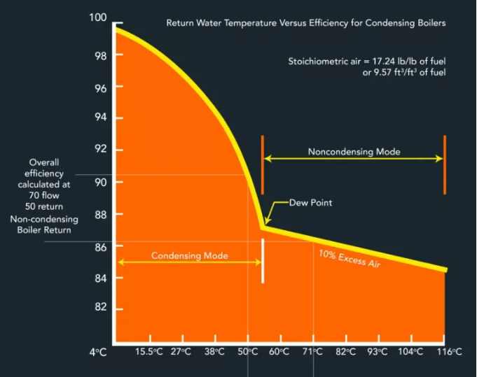

Heating one room instead of the whole house
Walls, floor and ceiling
Internal walls and ceiling are a similar temperature to the office so do not leak. In a heated house the leakage is via one external wall plus the floor. Once the heating is turned off there are now leaks through four external walls; ceiling and floor. That is six external surfaces instead of two. Whilst the temperature difference is not as high as with outside there is still a big increase in leakage which requires more energy.
This can be quantified. Assuming the unheated rooms are at 8C then this increases the demand from 1.4kwh to 2.2kwh. If the gap were 4C then it would be 2.6kwh. At 70C the radiator only outputs 1.7kwh so it looks insufficient to heat the room.
Energy used = energy supplied. So if the radiator did manage to output 2.7kwh we woukld expect energy used to be 2.7kwh or perhaps a little more. However the smart meter shows this one room costs not 2.6kwh but 8kwh! Similarly five rooms with 11.5Kwh of radiators costs 15Kwh.
So where does the missing 4-5kwh go? The answer is leakage from the boiler and pipes.
Boiler
My boiler is 24kwh. The rated efficiency is 97% with condensing and 87% without. At 70/60 there is no condensing so the boiler is 87% efficient and the leak is 13% * 8kwh = 1 kwh so there is still a gap of 4.3kwh. For the five rooms the boiler flue loses 2kwh so there is a gap of 3.5kwh.
At lower temperature there is supposedly a cost saving of up to 10% from condensing. However you can see from the graph below that condensing only starts to happen at the “dew point” and to get a 10% saving the boiler would need to have a return temperature of 4C. Boiler output temperature would be at most 20C higher so 24C; and radiator temperature 20C. Not nearly enough to heat a room.

Even in the Spring the boiler output needs to be at least 60C output to heat the house. This would be around 50C return temperature which equates to 3% saving. Potentially you may get an additional saving whilst it is warming the water at startup and you have cold water coming back. However once the boiler is up and running the return temperature will be at least 50C. Any less and the house won’t warm up.
Still worth taking the 3% saving where you can. That means setting the boiler output temperature to 60C if the radiators are warm enough. I find this is only OK if the outside temperature is 5C+. Any less than that requires 70C to reach and maintain 20C inside the house. Even at 10C it is much faster to warm the house at 70C than 60C.
Pipes
Even though the radiators are all turned off the hot water is circulating around the whole system. If you are heating the whole house this does not matter even if the pipes are uninsulated because any heat from the pipes is inside the heated envelope and contributes to heating the rooms. In this case the pipes, often uninsulated, are carrying hot water through cold rooms.
A rough estimate is that the pipes go the length of the house plus width plus height. Times two because there is an outbound and return pipe. Could be more as the pipes may follow a circuitous route after extensions were build. This comes out as 65m of 22m pipe @60W/m plus say 10m of 15mm pipe @45W/m. Total leakage from pipes 4.3kw
This is close to the missing kw for single room heating. The five room heating loses a bit less as some pipes pass through heated rooms and any energy emitted supports the radiator.
Bottom line is that central heating is designed to heat the whole house and is efficient doing that. For a single room it is more cost effective to use a 1 kwh electric fire than 8kwh of gas. Heating five rooms with central heating costs 3kwh/room so equivalent cost to a 1 kw electric fire.
Note that this is based on an above average sized house built in 1935 so your mileage may vary.
Summary
Why are my energy bills so high when I have most of the radiators switched off?
Central heating is designed to heat the whole house. If you only heat one or a few rooms then there is a lot of waste. in practice a room with a 1.3khw radiator costs 8kwh on the smart meter.
- Turning the heating off took the room has gone from two external surfaces to six. This doubles the leakage costing an additional 1.3kwh.
- Hot water pipes flow throughout the whole house. If the heating is off then this heat is lost and at a faster rate as the pipes are in cold rooms. This costs 4kwh.
- The boiler loses 13% through the flue. Condensing is supposed to save 10% but in practice this does not work well. This costs 1kwh.
When is it more effective to use electric heaters than gas central heating?
It is cheaper to use electric heating for up to four large rooms. Mostly this is because of heat lost via pipes in the cold rooms. In practice we rarely stay in one room. Even where we do, walking through a cold hall to a cold kitchen does not feel very homely. It is an option in limited circumstances such as if you are working all day in an office room that has a kettle.
- Turn off the heating when you don’t need it. This includes when you are out and in Spring/Autumn
- Turn the boiler down to 60C whenever it is enough to heat the house